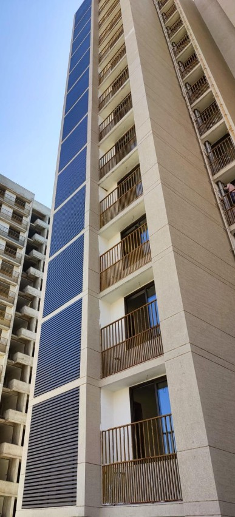
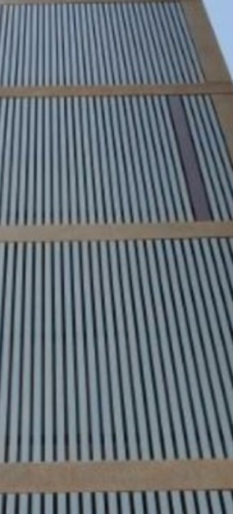

The U-Shape P25 louver is an exterior aluminium louver system where U-profile vertical blades are installed at a 25mm centre-to-centre pitch — blades spaced just 25mm apart. This close blade spacing creates a fine, dense louver pattern that delivers the highest level of sun shading, privacy screening, and visual coverage among all U-shape louver pitch options.
Yashvi Infra Co supplies and installs U-Shape P25 exterior louver systems in aluminium and GI material with custom powder-coat colors — widely used for building facades, sun control screens, staircase enclosures, AC unit covers, and privacy screens on commercial and residential buildings across Ahmedabad, Gandhinagar, Surat, Vadodara, and all of Gujarat.
At 25mm blade pitch, the P25 provides the highest solar shading coefficient among U-shape louver options — dramatically reducing heat gain through facades in Ahmedabad's intense summer sun. Ideal for west and south-facing walls that get the most direct solar exposure.
The dense 25mm blade spacing creates an almost solid visual screen from outside — excellent for staircase enclosures, utility area covers, boundary screens, and any facade area where you need to block visibility while maintaining airflow.
Despite the close 25mm pitch, the U-shaped open-bottom profile still allows natural air movement through the louver — making it suitable for ventilated facades, AC unit screens, and electrical shaft covers where both privacy and airflow are required.
The "P" number in any U-shape louver name stands for Pitch — the centre-to-centre distance in millimetres between adjacent blades. P25 has the smallest blade gap, giving the densest shading pattern in the U-shape louver range.
25mm blade pitch — densest spacing. Maximum sun shading, maximum privacy, near-solid screen appearance from outside.
50mm blade pitch — balanced option. Good sun shading with moderate openness. Classic louver look for most building facades across Gujarat.
75mm blade pitch — most open and airy. Bold architectural appearance with maximum ventilation. Best for decorative facades and open screening across Ahmedabad.
Not sure which pitch suits your project? Contact us — our team will recommend the best blade pitch based on your building orientation, shading requirement, and design intent.
| Parameter | P25 Specification |
|---|---|
| Profile Type | U-Shape (vertical blade, open-bottom) |
| Blade Pitch | 25 mm centre-to-centre |
| Blade Width | 25 mm face width |
| Blade Height (Depth) | 25 mm / 50 mm / 75 mm (custom available) |
| Blade Length | Custom — up to 6,000 mm |
| Material | Aluminum (AA3003) / GI (Galvanised Iron) |
| Thickness | 0.8 mm / 1.0 mm / 1.2 mm |
| Surface Finish | Polyester powder coat — any RAL color |
| Standard Colors | White, Silver, Charcoal, Custom RAL |
| Mounting System | Aluminium carrier frame — fixed or clip-in |
| Fixing Method | Anchor to RCC / steel structure |
| Sun Shading Level | Maximum — dense 25mm pattern |
| Privacy Level | High — near-opaque screen effect |
| Ventilation | Maintained — U-profile allows air passage |
| Weather Resistance | UV, rain & salt-air resistant |
| Fire Rating | Non-combustible — Class A |
| Expected Lifespan | 20+ years — outdoor installation |
Your wall faces west or south in Ahmedabad and gets 5+ hours of direct sun daily — P25's dense blade pattern cuts the maximum amount of heat gain. Also when you need a near-solid visual screen for privacy or to conceal utilities behind the louver.
You want a balanced combination of sun control and architectural openness — where some visual transparency through the louver is acceptable or even desired for the facade design.
The louver is mainly decorative — for a bold architectural look on the facade with maximum openness and ventilation, where heavy sun shading is not the primary requirement.
Buildings in Ahmedabad with west-facing facades take the most intense afternoon sun from March to October. P25's dense 25mm blade pattern blocks the maximum amount of direct radiation — significantly reducing interior temperatures and AC load in commercial buildings across Gujarat.
External staircases, utility shafts, and service area enclosures on commercial and residential buildings across Ahmedabad — P25 louvers create a near-solid visual screen that conceals the area completely while maintaining natural ventilation through the U-profile blades.
P25 louvers are widely used to conceal rooftop AC condensers, cooling towers, DG sets, and mechanical equipment on commercial buildings in Ahmedabad — hiding them completely from street view while allowing the airflow the equipment requires to operate efficiently.
Multi-level car parks and basement entry facades in Ahmedabad — P25 louvers provide a solid, professional finish to the external face of the parking structure while allowing ventilation for exhaust fumes and natural air circulation across all parking levels.
Shop fronts and retail plazas in Ahmedabad and Gujarat — P25 louvers on the upper facade reduce heat gain through glass shopfronts, improving energy efficiency while giving the building a uniform, finished external appearance aligned with brand guidelines.
Factory boundary screens, electrical substation covers, and industrial equipment enclosures across Gujarat — P25 provides the most solid visual screen of all U-shape pitches while keeping the equipment within adequately ventilated at all times.
At 25mm pitch, the P25 delivers the highest solar shading factor of any U-shape louver — cutting direct solar radiation on a west or south-facing wall by up to 85% in Ahmedabad's intense summer sun. This translates directly into lower AC energy bills in commercial buildings.
Powder-coated aluminium U-Shape P25 blades resist Gujarat's heavy monsoon rain, UV radiation, and extreme summer heat (45°C+) without rusting, fading, or warping — maintaining color and structural integrity for 20+ years on outdoor facades in Ahmedabad.
White, silver, charcoal, or any RAL color — P25 louver blades are powder-coated to match your building's color scheme, brand guidelines, or architectural design intent. Popular choices for Ahmedabad commercial buildings include silver, off-white, and RAL 9002 warm grey.
The U-shaped open-bottom profile allows natural ventilation through the 25mm gaps between blades — crucial for equipment screens and ventilated facades where airflow is a functional requirement, not just an aesthetic preference.
P25 blades are cut to custom length up to 6,000mm — covering large facade panels with fewer visible joints and a cleaner, more professional installation appearance on commercial buildings across Gujarat.
Powder-coated aluminium louver blades require no painting, polishing, or treatment after installation — periodic cleaning with water removes dust and bird droppings. Designed for maintenance-free performance across the 20+ year lifespan of the louver system.
The U-Shape P25 is an exterior aluminium louver system with U-profile vertical blades installed at a 25mm centre-to-centre pitch — blades spaced 25mm apart. This close blade spacing delivers the highest sun shading, maximum privacy, and a near-solid visual screen from the outside, while still allowing air to pass through the U-profile.
P25 means the pitch is 25mm — the centre-to-centre distance between each louver blade. A smaller pitch means more blades per metre, denser shading, and more privacy. P25 has the closest blade spacing, making it the densest and most solid-looking of all U-shape louver options available in Ahmedabad and Gujarat.
All three are U-shape louver profiles — the only difference is blade spacing. P25: 25mm apart, densest, maximum shading, most privacy. P50: 50mm apart, balanced shading and openness. P75: 75mm apart, most open, most airy, most see-through. Choose P25 for maximum sun control; P75 for a bolder, more open architectural look.
Yes — despite the close 25mm blade spacing, the U-shaped open-bottom profile allows natural air movement through the louver system. P25 airflow is less than P50 or P75, but still adequate for ventilated facades, AC unit screens, and equipment enclosures where some air circulation is required.
Yashvi Infra Co supplies U-Shape P25 louver blades in aluminium (recommended for exterior outdoor facades in Gujarat) and GI (cost-effective for covered or semi-sheltered locations). Aluminium is preferred for full outdoor installation due to superior corrosion resistance and longer lifespan.
Yes — we supply and install U-Shape P25 exterior louver systems across Ahmedabad, Gandhinagar, Surat, Vadodara, and all of Gujarat. Free site visit, design consultation, itemised quote, complete carrier frame supply, in-house installation, and warranty support included.
Need maximum sun shading and privacy screening for your building facade in Ahmedabad or Gujarat? Yashvi Infra Co supplies and installs U-Shape P25 aluminium exterior louvers — custom colors, custom blade depths, complete carrier frame system, and expert installation with warranty support. Contact us for a free site visit and itemised quote.
Call Us Now
Email Us